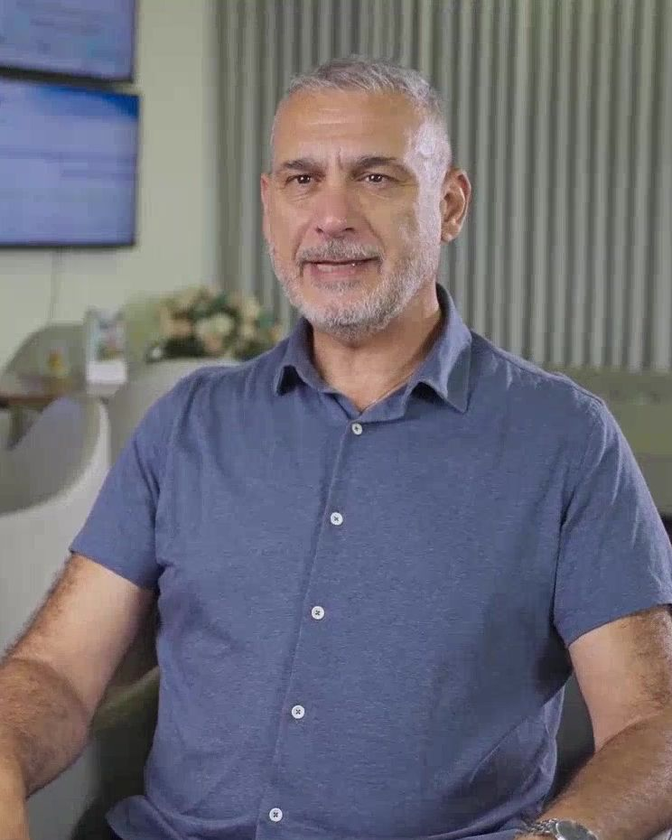
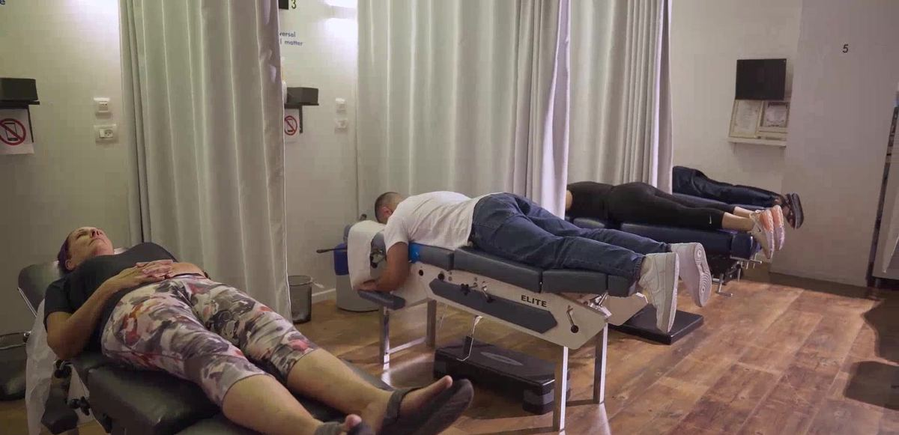
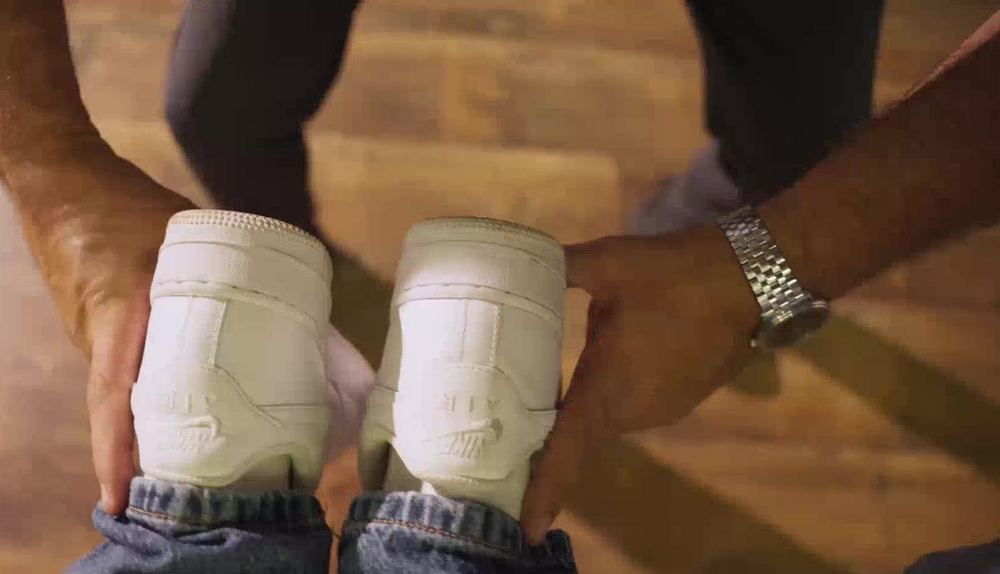
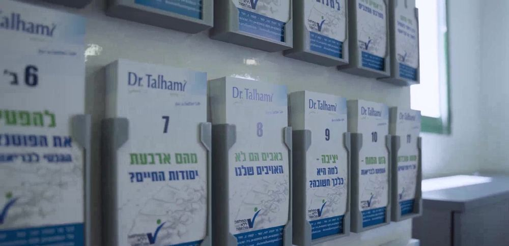
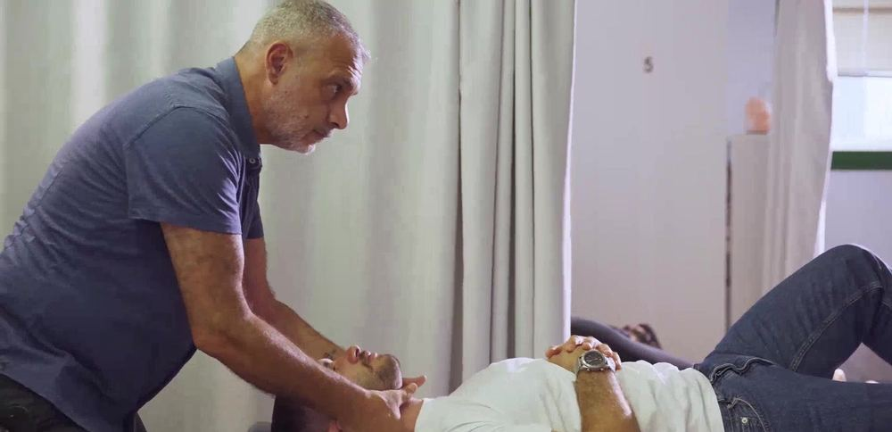
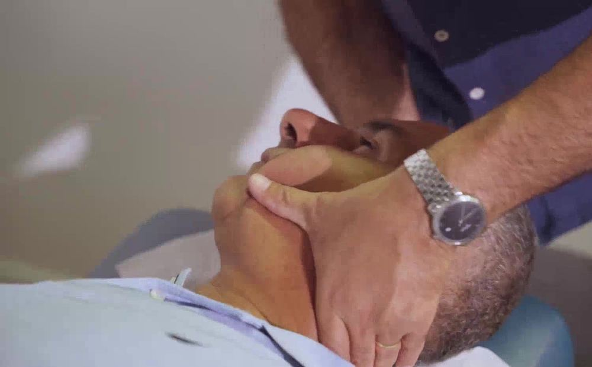
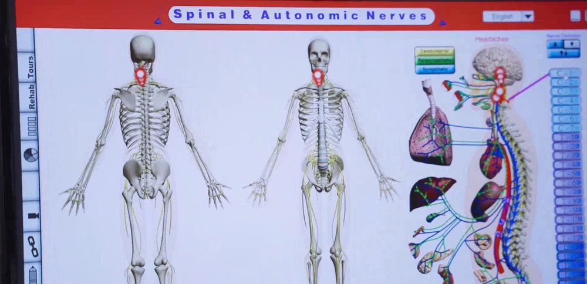
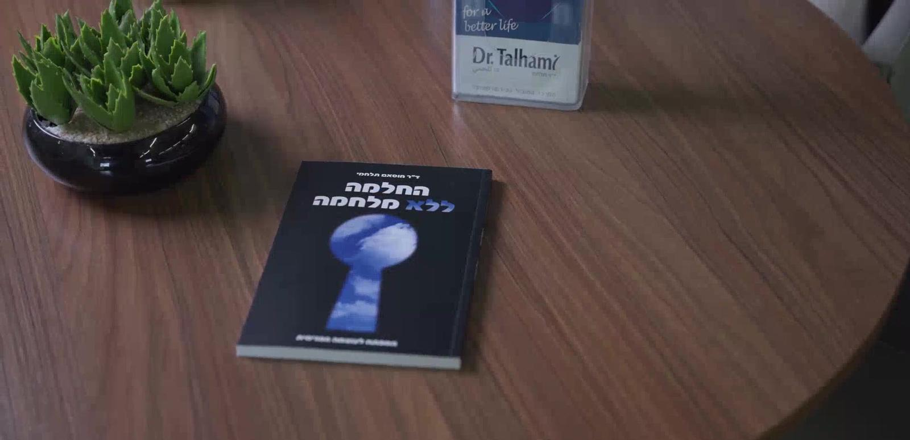

כאבי גב ופריצות דיסקBack pain and disc herniation
עמוד השדרה כולו, מהצוואר ועד הגב התחתון.The whole spine, from the neck to the lower back.
קונספט לדוגמה שנבנה עבור ד״ר חוסאם תלחמי · זה אינו האתר הרשמי של העסקA sample concept built for Dr. Husam Talhami · This is not the business’s official website
כירופרקטור (D.C.) · דרך בר יהודה 147, נשרChiropractor (D.C.) · 147 Bar Yehuda Rd, Nesher

ד״ר חוסאם תלחמי, בוגר Life Chiropractic College West בקליפורניה. מתמחה בעמוד השדרה, ביציבה ובמערכת העצבים.Dr. Husam Talhami, a graduate of Life Chiropractic College West in California. His focus is the spine, posture and the nervous system.
מטופלים עברו תחת ידיו, לפי אתר הקליניקה.patients have been through his hands, according to the clinic’s website.
שנות ותקyears in practice
טיפוליםtreatments
מהקבלה ועד מיטת הטיפול, בנשר.From the front desk to the treatment table, in Nesher.




מתוך האתר של ד״ר תלחמי.From Dr. Talhami’s own website.
עמוד השדרה כולו, מהצוואר ועד הגב התחתון.The whole spine, from the neck to the lower back.
שיקום היציבה.Restoring posture.


פרק שלם באתר שלו.A whole chapter on his site.
טיפולי המשך קבועים.Regular follow-up care.
קודם בודקים, אחר כך מטפלים.First a check, then the treatment.
מה כואב, ממתי, ומה כבר ניסיתם.What hurts, since when, and what you have tried.
ד״ר תלחמי בודק את עמוד השדרה בידיים.Dr. Talhami checks the spine by hand.
סריקת אינפרא אדום למערכת העצבים ובדיקת יציבה.An infrared scan of the nervous system and a posture test.
תוכנית טיפולים שנבנית בשבילכם.A treatment plan built for you.
הספר של ד״ר תלחמי. הוא גם מרצה לקבוצות.Dr. Talhami’s book (in Hebrew). He also lectures to groups.
״אני לא מרפא, אני עוזר לגוף להפעיל את האינטליגנציה הפנימית״“I don’t heal; I help the body put its own inner intelligence to work.”
ד״ר חוסאם תלחמי, מתוך האתר שלוDr. Husam Talhami, from his website (translated from Hebrew)
״הקליניקה של ד"ר תלחמי מאוד מסבירה פנים ונעימה.״
“Dr. Talhami’s clinic is very welcoming and pleasant.”
Gilad Rotem · translated from Hebrew
״מהטיפול הראשון הרגשתי יחס אישי, הקשבה וסבלנות.״
“From the very first treatment I felt personal attention, listening and patience.”
Eman Kharoufy · translated from Hebrew
״ד"ר תלחמי הוא איש מקצוע מצוין, סבלני, קשוב ואכפתי.״
“Dr. Talhami is an excellent professional: patient, attentive and caring.”
Ophir Koren · translated from Hebrew
״קיבלתי יחס מקצועי, אדיב ומכבד לאורך כל התהליך.״“I received professional, kind and respectful care throughout.” Dema Iesa
״תמיד מתקבלים במרפאה בחיוך, במאור פנים וביחס אנושי וחם.״“At the clinic you are always welcomed with a smile and warm, human care.” Ophir Koren
״הקליניקה של ד"ר תלחמי מאוד מסבירה פנים ונעימה.״“Dr. Talhami’s clinic is very welcoming and pleasant.” Gilad Rotem
״הרגשתי יחס אישי, הקשבה וסבלנות.״“I felt personal attention, listening and patience.” Eman Kharoufy
געו באזור, וההודעה לקליניקה תיכתב לבד.Tap the area and the message to the clinic writes itself.
טיפול בידיים בעמוד השדרה, ביציבה ובמערכת העצבים, בלי תרופות ובלי ניתוח.Hands-on care for the spine, posture and the nervous system, without drugs or surgery.
שיחה ושאלון, בדיקה ידנית, סריקה ממוחשבת של מערכת העצבים ובדיקת יציבה. אחר כך נבנית תוכנית טיפולים אישית.A talk and a questionnaire, a hands-on check, a computerised scan of the nervous system and a posture test. Then a personal treatment plan is put together.
באתר של ד״ר תלחמי יש פרק שלם על תינוקות ודלקות אוזניים. כדאי לשאול בטלפון מה מתאים לגיל.Dr. Talhami’s website has a whole chapter on babies and ear infections. Ask on the phone what suits your child’s age.
מתיחות, הדרכות ספורט, וגם ויטמינים וטיפולים טבעיים לפי התוכנית האישית.Traction, sports guidance, and vitamins and natural treatments as part of the personal plan.
בתיאום מראש. את השעות המעודכנות מקבלים בטלפון 04-823-0023.By appointment. Call 04-823-0023 for the current hours.

דרך בר יהודה 147, נשר147 Bar Yehuda Rd, Nesher